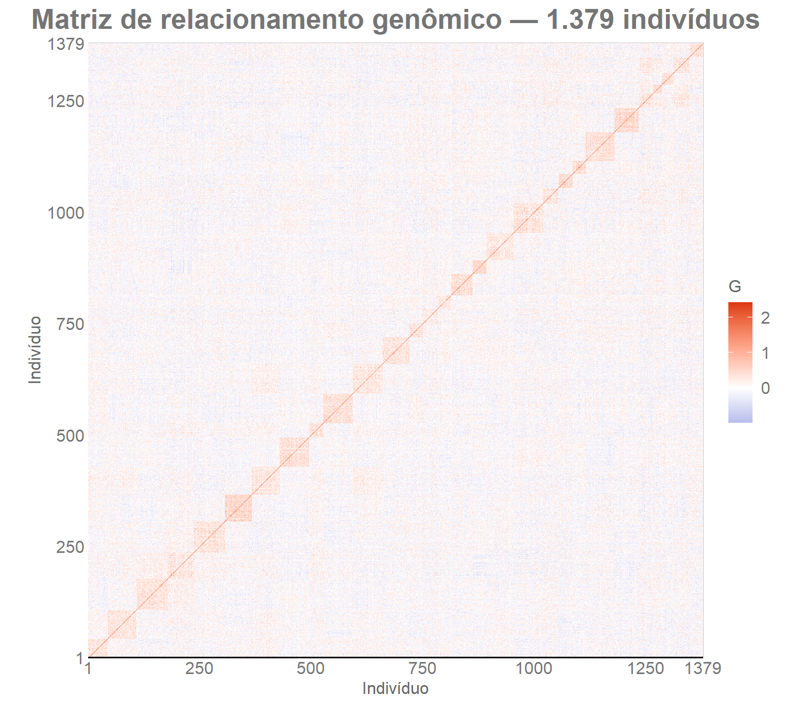
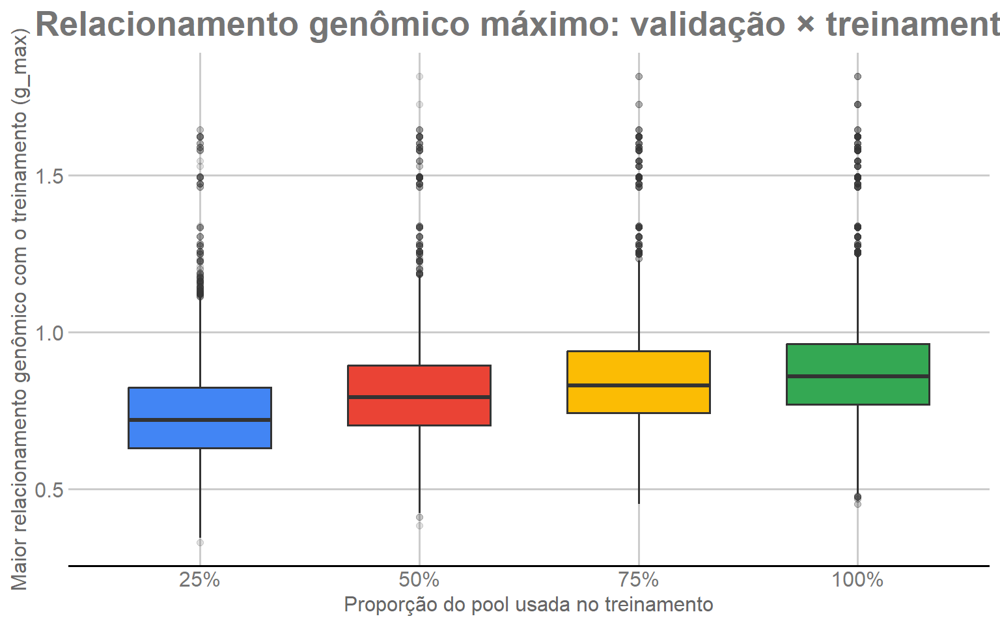
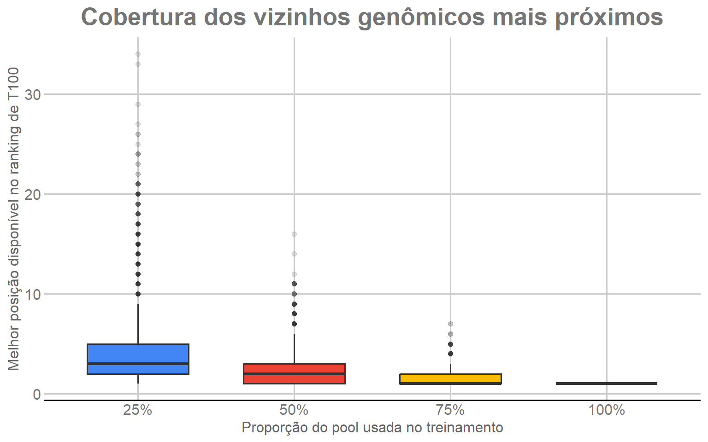

O GBLUP utiliza a semelhança genômica entre os indivíduos para
compartilhar informação ao longo da população. Essa semelhança é
resumida pela matriz de relacionamento genômico, representada por
G.
Se existem n indivíduos, G é uma matriz
n × n. O elemento G[i,j] quantifica o
relacionamento genômico entre os indivíduos i e
j com base nos SNPs observados. Em termos gerais,
indivíduos com perfis de marcadores mais semelhantes tendem a apresentar
valores maiores de relacionamento genômico.
Neste estudo, G é construída com os 1.379
indivíduos genotipados. Essa matriz será a estrutura genômica
comum aos modelos das etapas seguintes. Os fenótipos dos indivíduos
reservados para validação permanecem mascarados no GBLUP; portanto, a
presença de seus genótipos em G não fornece ao modelo os
valores fenotípicos que deverão ser preditos.
O módulo segue quatro passos principais:
calcular as frequências alélicas;
centralizar os marcadores;
construir a matriz G;
descrever a estrutura de relacionamento e a representatividade
genômica dos conjuntos de treinamento.
2. Dados utilizados
Reutilizamos a matriz de marcadores M e os conjuntos de
treinamento e validação definidos nas etapas anteriores.
A matriz M possui os 1.379 indivíduos nas linhas e os
4.325 SNPs nas colunas. Cada marcador está codificado como 0, 1 ou 2,
representando o número de cópias do alelo contado.
3. Frequência alélica
Como os SNPs estão codificados como 0, 1 e 2, a média da coluna
j corresponde a duas vezes a frequência do alelo contado.
Assim:
\[
p_j = \frac{\bar M_j}{2}.
\]
# Frequência do alelo contado em cada SNP.
p <- colMeans(M) / 2
summary(p)
Min. 1st Qu. Median Mean 3rd Qu. Max.
0.4275 0.5685 0.6186 0.6210 0.6730 0.9007
O vetor p possui uma frequência para cada um dos 4.325
marcadores. Essas frequências são usadas tanto para centralizar os
genótipos quanto para definir a escala da matriz de relacionamento.
4. Centralização dos marcadores
Para o marcador j, o número esperado de cópias do alelo
contado é 2p_j. Subtraímos esse valor de todos os
indivíduos para obter a matriz centralizada Z:
\[
Z_{ij}=M_{ij}-2p_j.
\]
# Centraliza cada SNP em torno de 2p_j.
Z <- sweep(
M,
2,
2 * p,
FUN = "-"
)
dim(Z)
[1] 1379 4325
A centralização faz com que o relacionamento seja calculado em
relação às frequências alélicas observadas nesta população, em vez de
utilizar diretamente as contagens brutas dos marcadores.
O produto ZZᵀ compara todos os indivíduos entre si. O
denominador coloca esses produtos na mesma escala de variabilidade
genômica definida pelas frequências alélicas.
# Denominador comum da matriz de relacionamento.
denominador <- 2 * sum(
p * (1 - p)
)
# Produto entre os perfis genômicos centralizados de todos os indivíduos.
G <- tcrossprod(Z) / denominador
Adicionamos um valor numérico muito pequeno à diagonal. Esse ajuste
evita problemas de estabilidade numérica em operações matriciais
posteriores, sem alterar de forma relevante os relacionamentos
genômicos.
diag(G) <- diag(G) + EPS_DIAGONAL
6. Estrutura da matriz G
Antes de utilizar G nos modelos, verificamos suas
propriedades básicas. A matriz deve ser quadrada, simétrica e formada
por valores finitos. Como há 1.379 indivíduos, sua dimensão deve ser
1379 × 1379.
# Mede a maior diferença entre G e sua transposta.
erro_simetria <- max(
abs(G - t(G))
)
resumo_G <- data.frame(
Individuos = nrow(G),
Media_diagonal = mean(diag(G)),
Minimo = min(G),
Maximo = max(G),
Erro_simetria = erro_simetria
)
knitr::kable(
resumo_G,
digits = 6,
caption = "Resumo da matriz de relacionamento genômico"
)
A figura abaixo representa a matriz G
completa. Cada ponto da grade corresponde ao relacionamento
entre um par de indivíduos. A diagonal principal representa o
relacionamento de cada indivíduo consigo mesmo; os valores fora da
diagonal mostram os relacionamentos entre indivíduos diferentes.
Como a matriz possui 1.379 linhas e 1.379 colunas, são representadas
quase 1,9 milhão de células. Por isso usamos geom_raster(),
que é adequado para uma grade regular desse tamanho e permite visualizar
toda a população sem selecionar apenas um subconjunto de indivíduos.
Os indivíduos permanecem na mesma ordem das linhas do arquivo
analítico. Assim, eventuais regiões ou blocos visuais no mapa de calor
descrevem a organização nessa ordem e não devem ser interpretados
automaticamente como grupos ou conglomerados genômicos inferidos.
if (!requireNamespace("ggplot2", quietly = TRUE)) {
stop("Instale o pacote ggplot2 para gerar as figuras do tutorial.")
}
if (!requireNamespace("ggthemes", quietly = TRUE)) {
stop("Instale o pacote ggthemes para usar o padrão gráfico GDocs.")
}
n_individuos <- N_INDIVIDUOS
# Converte todas as células de G para o formato usado pelo ggplot2.
dados_heatmap <- data.frame(
Individuo_x = rep(seq_len(n_individuos), times = n_individuos),
Individuo_y = rep(seq_len(n_individuos), each = n_individuos),
Relacionamento = as.vector(G)
)
quebras_eixos <- c(
1,
seq(
PASSO_EIXO,
n_individuos - 1,
by = PASSO_EIXO
),
n_individuos
)
figura_heatmap <- ggplot2::ggplot(
dados_heatmap,
ggplot2::aes(
x = Individuo_x,
y = Individuo_y,
fill = Relacionamento
)
) +
ggplot2::geom_raster() +
ggplot2::scale_fill_gradient2(
low = "#3366CC",
mid = "white",
high = "#DC3912",
midpoint = 0
) +
ggplot2::scale_x_continuous(
breaks = quebras_eixos,
expand = c(0, 0)
) +
ggplot2::scale_y_continuous(
breaks = quebras_eixos,
expand = c(0, 0)
) +
ggplot2::coord_equal() +
ggplot2::labs(
title = "Matriz de relacionamento genômico — 1.379 indivíduos",
x = "Indivíduo",
y = "Indivíduo",
fill = "G"
) +
ggthemes::theme_gdocs() +
ggplot2::theme(
plot.title = ggplot2::element_text(face = "bold", hjust = 0.5),
legend.position = "right"
)
figura_heatmap

Matriz de relacionamento genômico G completa para os 1.379 indivíduos.
A leitura dessa figura é global: regiões com valores mais intensos
indicam pares ou grupos com relacionamentos genômicos mais pronunciados.
Entretanto, o mapa de calor não informa sozinho quão frequentes são
esses relacionamentos. Para isso, examinamos a distribuição dos
elementos fora da diagonal.
8. Distribuição dos relacionamentos entre indivíduos diferentes
Como G é simétrica, o relacionamento entre os indivíduos
i e j aparece em duas posições:
G[i,j] e G[j,i]. Para que cada par de
indivíduos seja contado uma única vez, utilizamos somente o triângulo
superior da matriz, sem a diagonal:
\[
G_{pares}=\{G_{ij}:i<j\}.
\]
A distribuição resultante mostra onde se concentra a maior parte dos
relacionamentos da população. Também calculamos os percentis P90, P95 e
P99 como referências para a cauda superior da distribuição.
# Mantém cada par de indivíduos uma única vez e exclui a diagonal.
G_offdiag <- G[
upper.tri(G)
]
n_pares_esperado <- nrow(G) * (nrow(G) - 1) / 2
stopifnot(length(G_offdiag) == n_pares_esperado)
stopifnot(!anyNA(G_offdiag))
# Referências descritivas da cauda superior da distribuição.
percentis_G <- quantile(
G_offdiag,
probs = PROBS_PERCENTIS
)
knitr::kable(
data.frame(
Percentil = LABELS_PERCENTIS,
Relacionamento = unname(percentis_G)
),
digits = 6,
caption = "Percentis de referência dos relacionamentos entre pares únicos"
)
Percentis de referência dos relacionamentos entre pares
únicos
P90, P95 e P99 não são limites de seleção nem critérios de
equivalência. Eles apenas ajudam a localizar, dentro da distribuição
completa, valores que pertencem à faixa superior de relacionamento
genômico.
9. Representatividade genômica dos indivíduos de validação
Além de conhecer a estrutura global de G, precisamos
entender quão bem os indivíduos de validação estão representados
genomicamente pelo conjunto de treinamento. Essa é uma pergunta
diferente da acurácia preditiva: aqui não usamos fenótipos nem ajustamos
o GBLUP. Utilizamos somente os relacionamentos de G para
caracterizar a cobertura genômica disponível.
Para cada indivíduo de validação v e um conjunto de
treinamento T, definimos o maior relacionamento disponível
como:
\[
g_{\max}(v,T)=\max_{j\in T}G_{vj}.
\]
Essa medida responde à pergunta:
Qual é o indivíduo de treinamento genomicamente mais próximo
deste indivíduo de validação, e quão próximo ele é?
Valores maiores de g_max indicam que existe pelo menos
um indivíduo de treinamento relativamente próximo de v.
Valores menores indicam que aquela região da diversidade genômica está
menos representada pelo conjunto de treinamento.
Entretanto, g_max sozinho não mostra quanto da melhor
cobertura disponível no pool completo foi preservada após reduzir o
tamanho do treinamento. Para isso, usamos uma segunda medida: a
posição do melhor vizinho disponível no ranking de
T100.
Para cada indivíduo de validação, ordenamos os 1.103 indivíduos de
T100 do maior para o menor relacionamento. O indivíduo mais relacionado
recebe posição 1, o segundo recebe posição 2 e assim por diante. Em cada
subconjunto T25, T50, T75 ou T100, procuramos a menor posição ainda
presente.
Assim, as duas medidas são complementares:
g_max mede quão próximo é o melhor
representante disponível;
melhor_rank_no_pool registra a posição desse
representante no ranking de T100 e, portanto, quanto dos
vizinhos mais próximos do pool completo foi preservado no
subconjunto.
Essas medidas são apenas descritivas. Elas não são utilizadas para
escolher os indivíduos de treinamento e não substituem os testes de
desempenho preditivo.
# Número esperado de combinações: repetição × validação × tamanho de treinamento.
N_CENARIOS_RANK <- N_REP * N_VALIDACAO * N_TAMANHOS
linhas_rank <- vector(
"list",
N_CENARIOS_RANK
)
k <- 0L
for (rep in seq_len(N_REP)) {
# Validação e pool completo da repetição atual.
validacao <- splits_mestre[[CHAVE_T100]][[rep]]$valid
pool_index <- splits_mestre[[CHAVE_T100]][[rep]]$pool
for (ind in validacao) {
# 1. Relacionamentos do indivíduo de validação com todo o pool T100.
g_pool <- G[ind, pool_index]
# 2. Ordena T100 do vizinho mais relacionado para o menos relacionado.
ordem_pool <- order(
g_pool,
decreasing = TRUE
)
pool_ordenado <- pool_index[ordem_pool]
# 3. Associa a cada indivíduo do pool sua posição no ranking completo.
rank_no_pool <- seq_along(pool_ordenado)
nomes_rank <- setNames(
rank_no_pool,
pool_ordenado
)
for (proporcao in PROPORCOES_TREINO) {
treino_index <- splits_mestre[[as.character(proporcao)]][[rep]]$treino
# 4. Identifica quais posições do ranking completo permanecem no treino.
ranks_treino <- nomes_rank[
as.character(treino_index)
]
melhor_rank <- min(ranks_treino)
# 5. Recupera o melhor vizinho disponível no conjunto atual.
melhor_individuo <- as.integer(
names(ranks_treino)[
which.min(ranks_treino)
]
)
g_max_atual <- G[ind, melhor_individuo]
# 6. Registra as duas medidas usadas na interpretação.
k <- k + 1L
linhas_rank[[k]] <- data.frame(
repeticao = rep,
proporcao_pool = proporcao,
individuo_validacao = ind,
melhor_rank_no_pool = melhor_rank,
melhor_individuo_treino = melhor_individuo,
g_max_atual = g_max_atual
)
}
}
}
ranking_individual <- do.call(
rbind,
linhas_rank
)
stopifnot(nrow(ranking_individual) == N_CENARIOS_RANK)
stopifnot(
all(
ranking_individual$melhor_rank_no_pool[
ranking_individual$proporcao_pool == max(PROPORCOES_TREINO)
] == 1
)
)
O resumo abaixo combina as duas medidas. Para interpretar a tabela,
valores maiores de g_max_atual indicam maior proximidade
com algum indivíduo de treinamento, enquanto valores menores de
melhor_rank_no_pool indicam melhor preservação dos vizinhos
mais próximos existentes em T100.
resumo_ranking <- aggregate(
cbind(
g_max_atual,
melhor_rank_no_pool
) ~ proporcao_pool,
data = ranking_individual,
FUN = mean
)
resumo_ranking_exibicao <- resumo_ranking
names(resumo_ranking_exibicao) <- c(
"Proporção do pool",
"Relacionamento máximo médio",
"Melhor posição média no ranking de T100"
)
knitr::kable(
resumo_ranking_exibicao,
digits = 4,
caption = "Relacionamento máximo e cobertura dos vizinhos genômicos por tamanho de treinamento"
)
Relacionamento máximo e cobertura dos vizinhos genômicos por
tamanho de treinamento
Proporção do pool
Relacionamento máximo médio
Melhor posição média no ranking de T100
0.25
0.7396
4.0685
0.50
0.8085
2.0275
0.75
0.8500
1.3347
1.00
0.8780
1.0000
9.1. Relacionamento genômico máximo
A primeira figura mostra a distribuição de g_max para
todos os indivíduos de validação ao longo das 30 repetições. Cada caixa
responde, para um tamanho de treinamento, quão próximo está o melhor
representante genômico disponível.
dados_gmax <- ranking_individual
dados_gmax$proporcao_fator <- factor(
dados_gmax$proporcao_pool,
levels = PROPORCOES_TREINO,
labels = LABELS_PROP
)
figura_gmax <- ggplot2::ggplot(
dados_gmax,
ggplot2::aes(
x = proporcao_fator,
y = g_max_atual,
fill = proporcao_fator
)
) +
ggplot2::geom_boxplot(
width = 0.65,
outlier.alpha = 0.15
) +
ggthemes::scale_fill_gdocs() +
ggplot2::labs(
title = "Relacionamento genômico máximo: validação × treinamento",
x = "Proporção do pool usada no treinamento",
y = "Maior relacionamento genômico com o treinamento (g_max)"
) +
ggthemes::theme_gdocs() +
ggplot2::theme(
plot.title = ggplot2::element_text(face = "bold", hjust = 0.5),
legend.position = "none"
)
figura_gmax

Distribuição do maior relacionamento genômico entre cada indivíduo de
validação e o treinamento disponível.
Ao comparar T25, T50, T75 e T100, uma distribuição deslocada para
valores mais altos significa que os indivíduos de validação encontram
representantes mais próximos no treinamento. Como conjuntos maiores
contêm mais candidatos, esta figura ajuda a visualizar quanto a redução
amostral diminui a proximidade máxima disponível.
9.2. Cobertura dos vizinhos genômicos mais próximos
A segunda figura usa o ranking definido em T100 como referência.
Posição 1 significa que o subconjunto de treinamento ainda contém o
indivíduo mais relacionado de todo o pool. Posição 2 significa que o
melhor indivíduo disponível no subconjunto é o segundo mais relacionado
do pool, e assim sucessivamente.
Em T100, a posição é sempre 1 por construção. Para T25, T50 e T75,
quanto mais a distribuição estiver concentrada próxima de 1, maior é a
cobertura dos melhores vizinhos genômicos presentes no pool
completo.
dados_rank_plot <- ranking_individual
dados_rank_plot$proporcao_fator <- factor(
dados_rank_plot$proporcao_pool,
levels = PROPORCOES_TREINO,
labels = LABELS_PROP
)
figura_rank <- ggplot2::ggplot(
dados_rank_plot,
ggplot2::aes(
x = proporcao_fator,
y = melhor_rank_no_pool,
fill = proporcao_fator
)
) +
ggplot2::geom_boxplot(
width = 0.65,
outlier.alpha = 0.15
) +
ggthemes::scale_fill_gdocs() +
ggplot2::labs(
title = "Cobertura dos vizinhos genômicos mais próximos",
x = "Proporção do pool usada no treinamento",
y = "Melhor posição disponível no ranking de T100"
) +
ggthemes::theme_gdocs() +
ggplot2::theme(
plot.title = ggplot2::element_text(face = "bold", hjust = 0.5),
legend.position = "none"
)
figura_rank

Distribuição da melhor posição no ranking genômico disponível nos
conjuntos T25, T50, T75 e T100.
Em conjunto, as duas figuras mostram proximidade
(g_max) e cobertura (posição no ranking).
Elas ajudam a caracterizar o que é perdido genomicamente quando T100 é
reduzido para T75, T50 ou T25. A decisão sobre suficiência preditiva,
porém, será baseada nas predições do GBLUP e no teste formal de
equivalência das etapas seguintes.
10. Objeto genômico usado pelos modelos
As etapas seguintes utilizam as mesmas frequências alélicas, a mesma
matriz centralizada e a mesma escala de relacionamento. Por isso
reunimos p, Z, G e o denominador
em um único objeto.
genomic_objects <- list(
p = p,
Z = Z,
G = G,
denom = denominador
)
saveRDS(
genomic_objects,
"output/03_genomic_objects.rds"
)
Com a matriz G construída e a representatividade
genômica descrita, a próxima etapa avalia como o desempenho do GBLUP
muda à medida que aumentamos o número de indivíduos reais no
treinamento.